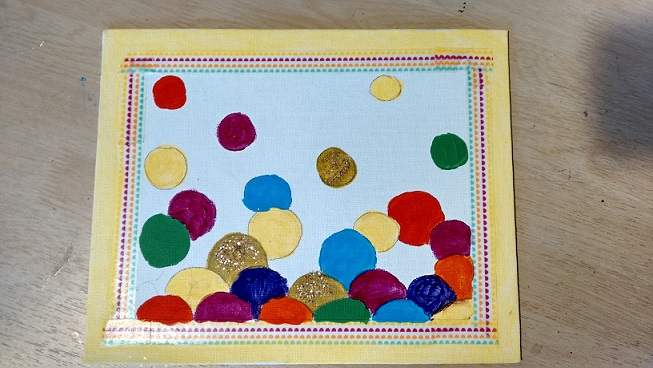
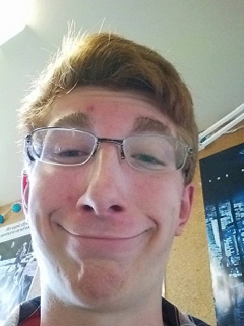

Scales
November 2015
Colourful Abstract Painting

Colourful Abstract Painting
Painting of the reflections on Wolfe Lake
My first painting with a palette knife.
Marbled bowls made out of polymer clay.
A painting of a tree that I made for a school auction. It sold for $48!
Put your favourite quotes on patterned scrapbook paper. Fit the shapes together like a puzzle, and tape them to your wall.
You can mix dish soap, paint, and water to make a container of bubbles! Then you press the canvas ontop of the pile and you will get a bubble print on your canvas. Then you can use leaves and markers to make them look more like flowers.
I made this string art for my mom on Mother's Day. Paint a peice of wood and hammer in nails in a shape or pattern you like. Then, you just choose one or more colours of thread and weave it around the nails.
This is a painting of an orange blumen that I made for my mom for Mother's Day.
You can make 3D bubbles with any word in them by simply making a ball of hot glue over any word ina newspaper. When it's dry, you just cut it out and you have a clear bubble with a word at the bottom. You can also make the bubble over a picture or a character from a comic strip from the newspaper.
You can make a cookie shaped earbud holder with perler beads. To see how to make this craft, go to this link: https://www.youtube.com/watch?v=j6I7f2TBp1w

To make this colourful and abstract painting, you will need:
Paint the wood white (or if it's a canvas just leave it white) and glue the napkins or tissue paper down onto the wood. Make sure it isn't flat. You're going to want it to be bumpy and have different shapes in the paper you glued down. Slowly drip the food colouring all over the napkins. The food colouring shouls spread out a bit if it was dropped onto the napkins (not the wood).

I drew a weird picture of my brother.
